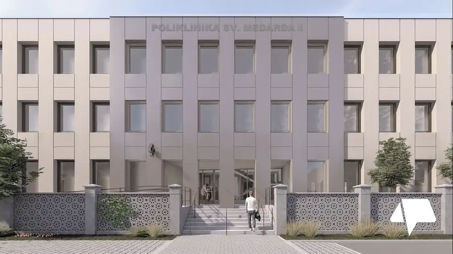
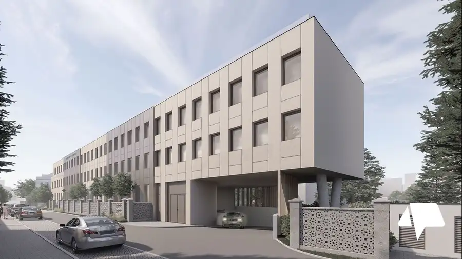
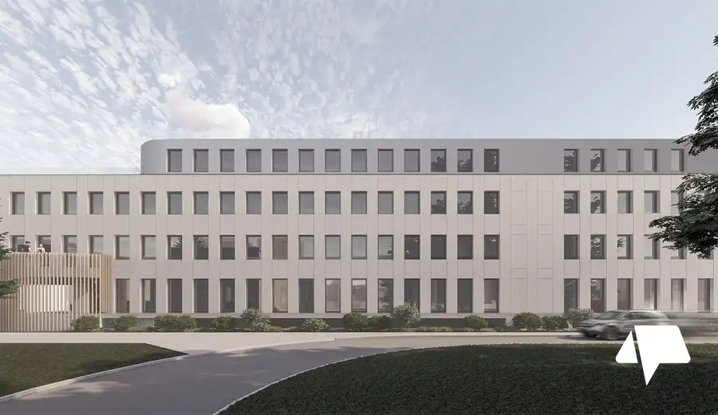
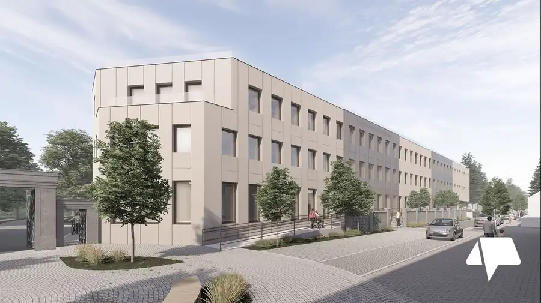
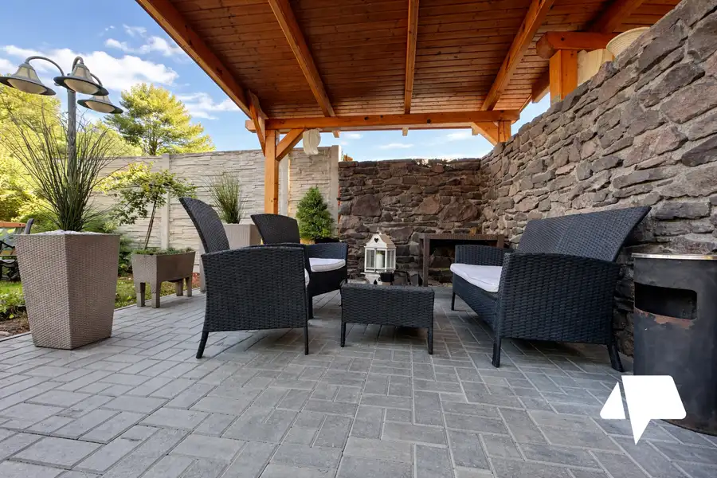
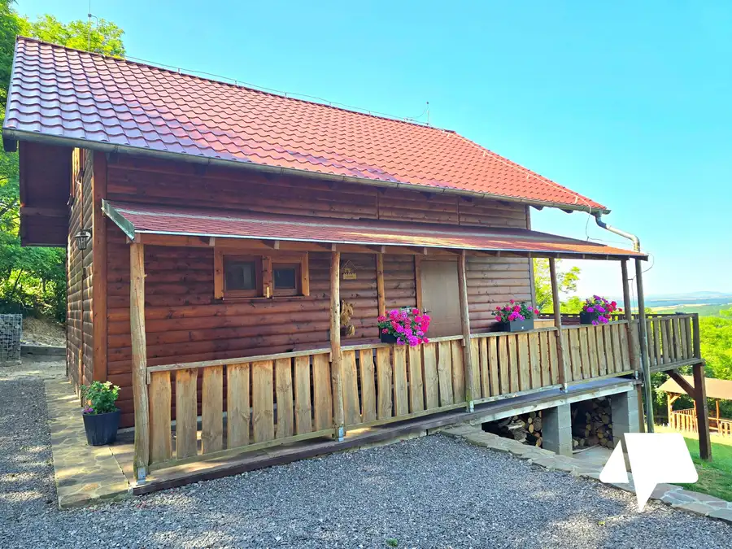
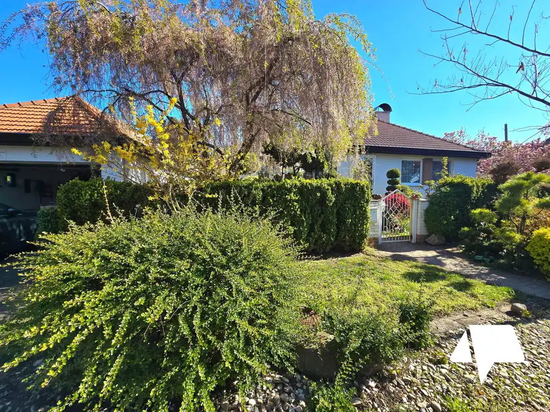

Prenájom exkluzívne priestory pre ambulancie Nitra- Špitálska
Nitra




- Plocha30 m²
- StavNovostavba
O nehnuteľnosti
Otvorte si vlastnú ambulanciu v novej modernej poliklinike v Nitre!Pripravuje sa Poliklinika sv. Medarda II, ktorá vyrastá v areáli Fakultnej nemocnice na Špitálskej ulici v Nitre – v samotnom srdci mesta. Termín otvorenia: január 2026 K dispozícii bude podzemné parkovanie – prenájom parkovacích miest podľa individuálnej dohody. Ideálne miesto pre vašu ambulanciuNová poliklinika spája moderné priestory, výbornú lokalitu a profesionálne zázemie. Je navrhnutá tak, aby lekárom aj pacientom poskytla pohodlie, dostupnosť a reprezentatívne prostredie. Výborná polohaLokalita priamo v areáli Fakultnej nemocnice zabezpečuje výbornú dostupnosť pre pacientov aj zdravotnícky personál. Flexibilné priestory na mieruPonúkame priestory rôznych veľkostí, prispôsobiteľné podľa potrieb lekára alebo zdravotníckeho zariadenia – od menších ambulancií až po väčšie pracoviská. Individuálny prístupPrenájom riešime osobne a férovo, s cieľom nájsť optimálne riešenie pre každého nájomcu. Aktuálne sú k dispozícii ešte dva komerčné priestory na prízemí.Neváhajte a zarezervujte si svoje miesto už dnes! Pre viac informácií o prenájme ma kontaktujte – rada vám poskytnem detaily osobne.Ing. Patrícia Slamková0911 691 631slamkova@nitrianskereality.com
Parametre
- Druh
- Iný priestor
- Dátum zverejnenia
- 27. 10. 2025
- Energetický certifikát budovy
- V príprave
- Rok výstavby
- 2025
- Stav nehnuteľnosti
- Novostavba
- Typ
- Prenájom
- Typ konštrukcie
- Železobetónová
- Úžitková plocha
- 30 m²
Kde to je


Mohlo by Vás zaujímať

Komerčné priestoryNové 349 000 €Predaj prevádzkový objekt v Zlatých Moravciach s dvojizbovým bytom Zlaté Moravce 200 m²
Chata, drevenica, zrubNové 174 900 €Predaj chata/ chalupa Jedľové Kostoľany- kompletne zariadená novostavba Jedľové Kostoľany 130 m²
DomNové 360 000 €Predaj výnimočný 6-izbový rodinný dom Šaľa s bazénom a luxusnou záhradou 2200 m² Šaľa 292 m²